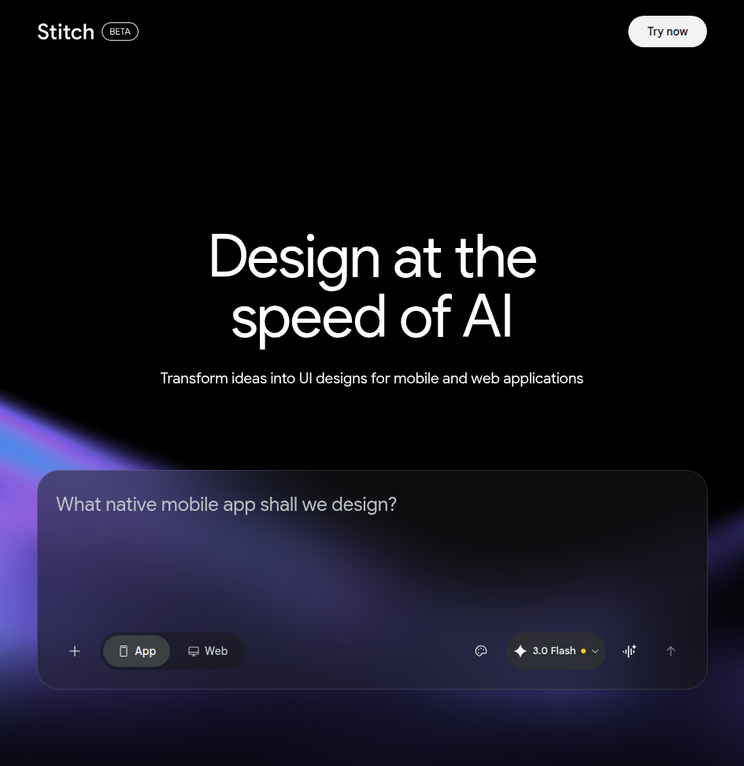

Creative tooling
Google Stitch
An AI-assisted design/prototyping surface from Google. Not a filmmaking model, but highly relevant for building the interfaces around filmmaking software.
Why it matters
Useful for rapidly mocking control panels, operator dashboards, storyboard surfaces, review tools, and agentic production UIs without starting from a blank design file.